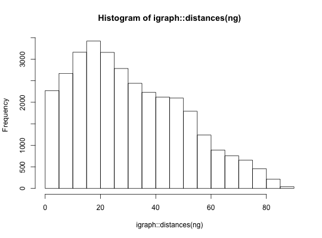
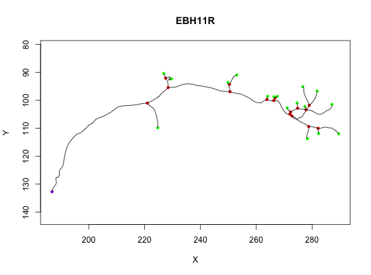

neuron makes a neuron object from appropriate variables.
is.neuron will check if an object looks like a neuron.
as.neuron will convert a suitable object to a neuron
as.neuron.data.frame expects a block of SWC format data
as.neuron.ngraph converts a graph (typically an
ngraph object) to a neuron
as.neuron.default will add class "neuron" to a neuron-like
object.
neuron(d, NumPoints = nrow(d), StartPoint, BranchPoints = integer(), EndPoints, SegList, SubTrees = NULL, InputFileName = NULL, NeuronName = NULL, ..., MD5 = TRUE) is.neuron(x, Strict = FALSE) as.neuron(x, ...) # S3 method for data.frame as.neuron(x, ...) # S3 method for ngraph as.neuron(x, vertexData = NULL, origin = NULL, Verbose = FALSE, ...) # S3 method for default as.neuron(x, ...)
NULL) sets NeuronName to the file name without the file extension.A list with elements: (NumPoints,StartPoint,BranchPoints,EndPoints,nTrees,NumSegs,SegList, [SubTrees]) NB SubTrees will only be present when nTrees>1.
neuron objects consist of a list containing multiple fields describing the 3D location and connectivity of points in a traced neuron. The critical fields of a neuron, n, are n$d which contains a dataframe in SWC format and n$SegList which contains a representation of the neuron's topology used for most internal calculations. For historical reasons, n$SegList is limited to a single fully-connected tree. If the tree contains multiple unconnected subtrees, then these are stored in n$SubTrees and nTrees will be >1; the "master" subtree (typically the one with the most points) will then be stored in n$SegList and n$NumPoints will refer to the number of points in that subtree, not the whole neuron.
StartPoint, BranchPoints, EndPoints are indices matching the rows of
the vertices in d not arbitrary point numbers typically
encoded in d$PointNo.
Columns will be ordered c('PointNo','Label','X','Y','Z','W','Parent')
Uses a depth first search on the tree to reorder using the given origin.
When the graph contains multiple subgraphs, only one will be chosen as the master tree and used to construct the SegList of the resultant neuron. However all subgraphs will be listed in the SubTrees element of the neuron and nTrees will be set appropriately.
When the graph vertices have a label attribute derived from PointNo, the origin is assumed to be specified with respect to the vertex labels rather than the raw vertex ids.
graph.dfs, as.seglist
Other neuron: ngraph,
plot.neuron,
potential_synapses, prune,
resample, rootpoints,
spine, subset.neuron
## See help for functions listed in See Also for more detailed examples ## Basic properties # a sample neuron n = Cell07PNs[[1]] # inspect its internal structure str(n)#> List of 24 #> $ CellType : chr "DA1" #> $ NeuronName : chr "EBH11R" #> $ InputFileName:Class 'AsIs' chr "/GD/projects/PN2/TransformedTraces/DA1/EBH11R.tasc" #> $ CreatedAt : POSIXt[1:1], format: "2006-01-17 15:21:14" #> $ NodeName : Named chr "jefferis.joh.cam.ac.uk" #> ..- attr(*, "names")= chr "nodename" #> $ InputFileStat:'data.frame': 1 obs. of 10 variables: #> ..$ size : num 15379 #> ..$ isdir : logi FALSE #> ..$ mode :Class 'octmode' int 420 #> ..$ mtime : POSIXt[1:1], format: "2006-01-12 00:52:01" #> ..$ ctime : POSIXt[1:1], format: "2006-01-12 00:52:01" #> ..$ atime : POSIXt[1:1], format: "2006-01-17 15:21:14" #> ..$ uid : int 501 #> ..$ gid : int 501 #> ..$ uname : chr "jefferis" #> ..$ grname: chr "jefferis" #> $ InputFileMD5 : Named chr "fcacee3f874cbe2c6ad96214e6fee337" #> ..- attr(*, "names")=Class 'AsIs' chr "/GD/projects/PN2/TransformedTraces/DA1/EBH11R.tasc" #> $ NumPoints : int 180 #> $ StartPoint : num 1 #> $ BranchPoints : num [1:16] 34 48 51 75 78 95 98 99 108 109 ... #> $ EndPoints : num [1:18] 1 42 59 62 80 85 96 100 102 112 ... #> $ NumSegs : int 33 #> $ SegList :List of 33 #> ..$ : int [1:34] 1 2 3 4 5 6 7 8 9 10 ... #> ..$ : int [1:9] 34 35 36 37 38 39 40 41 42 #> ..$ : num [1:7] 34 43 44 45 46 47 48 #> ..$ : int [1:4] 48 49 50 51 #> ..$ : int [1:9] 51 52 53 54 55 56 57 58 59 #> ..$ : num [1:4] 51 60 61 62 #> ..$ : num [1:14] 48 63 64 65 66 67 68 69 70 71 ... #> ..$ : int [1:4] 75 76 77 78 #> ..$ : int [1:3] 78 79 80 #> ..$ : num [1:6] 78 81 82 83 84 85 #> ..$ : num [1:11] 75 86 87 88 89 90 91 92 93 94 ... #> ..$ : int [1:2] 95 96 #> ..$ : num [1:3] 95 97 98 #> ..$ : int [1:2] 98 99 #> ..$ : int [1:2] 99 100 #> ..$ : num [1:3] 99 101 102 #> ..$ : num [1:7] 98 103 104 105 106 107 108 #> ..$ : int [1:2] 108 109 #> ..$ : int [1:4] 109 110 111 112 #> ..$ : num [1:4] 109 113 114 115 #> ..$ : int [1:3] 115 116 117 #> ..$ : num [1:3] 115 118 119 #> ..$ : int [1:3] 119 120 121 #> ..$ : num [1:14] 119 122 123 124 125 126 127 128 129 130 ... #> ..$ : num [1:2] 108 135 #> ..$ : int [1:9] 135 136 137 138 139 140 141 142 143 #> ..$ : int [1:6] 143 144 145 146 147 148 #> ..$ : num [1:7] 143 149 150 151 152 153 154 #> ..$ : num [1:7] 135 155 156 157 158 159 160 #> ..$ : int [1:6] 160 161 162 163 164 165 #> ..$ : num [1:5] 160 166 167 168 169 #> ..$ : int [1:4] 169 170 171 172 #> ..$ : num [1:9] 169 173 174 175 176 177 178 179 180 #> $ d :'data.frame': 180 obs. of 7 variables: #> ..$ PointNo: int [1:180] 1 2 3 4 5 6 7 8 9 10 ... #> ..$ Label : num [1:180] 2 2 2 2 2 2 2 2 2 2 ... #> ..$ X : num [1:180] 187 187 188 188 188 ... #> ..$ Y : num [1:180] 133 131 130 129 129 ... #> ..$ Z : num [1:180] 88.2 90.6 93.1 95 97.5 ... #> ..$ W : num [1:180] 1.01 1.27 1.14 1.27 1.27 1.27 1.27 1.27 1.27 1.27 ... #> ..$ Parent : num [1:180] -1 1 2 3 4 5 6 7 8 9 ... #> $ OrientInfo :List of 5 #> ..$ AxonOriented: logi TRUE #> ..$ AVMPoint : logi NA #> ..$ AVLPoint : logi NA #> ..$ Scl : num [1:3] 1 1 1 #> ..$ NewAxes : num [1:3] 1 2 3 #> $ SegOrders : num [1:33] 1 2 2 3 4 4 3 4 5 5 ... #> $ MBPoints : int [1:2] 34 48 #> $ LHBranchPoint: int 75 #> $ SegTypes : num [1:33] 1 3 1 3 3 3 1 2 2 2 ... #> $ AxonSegNos :List of 3 #> ..$ PreMBAxons : int 1 #> ..$ MBAxons : int 3 #> ..$ PostMBAxons: int 7 #> $ LHSegNos : num [1:26] 8 9 10 11 12 13 14 15 16 17 ... #> $ MBSegNos :List of 2 #> ..$ : int 2 #> ..$ : num [1:3] 4 5 6 #> $ NumMBBranches: num 2 #> $ AxonLHEP : num 72 #> - attr(*, "class")= chr [1:2] "neuron" "list" #>#> X Y Z #> Min. :186.9 Min. : 90.36 Min. : 88.2 #> 1st Qu.:225.6 1st Qu.: 97.56 1st Qu.:103.4 #> Median :258.4 Median :102.70 Median :112.9 #> Mean :249.4 Mean :104.03 Mean :120.9 #> 3rd Qu.:277.7 3rd Qu.:109.04 3rd Qu.:139.0 #> Max. :289.5 Max. :132.71 Max. :157.3 #>#> X Y Z #> 1 186.8660 132.70932 88.20393 #> 42 224.7067 109.86362 153.58749 #> 59 229.6343 92.30637 157.29700 #> 62 226.8855 90.36325 147.59602 #> 80 249.8864 93.59079 136.77795 #> 85 253.0099 90.94904 137.34921 #> 96 264.0801 98.53390 121.89463 #> 100 266.3223 98.73241 116.46558 #> 102 267.5460 98.59859 112.85608 #> 112 271.0762 102.67288 100.84955 #> 117 274.6128 100.92061 103.28772 #> 121 277.3920 102.19148 102.69473 #> 134 287.1214 101.43365 103.30740 #> 148 281.7958 96.63987 101.08075 #> 154 276.6551 95.09809 99.22113 #> 165 278.3287 113.75627 104.87700 #> 172 282.3069 111.93213 105.65492 #> 180 289.5364 111.96014 109.18281 #>## Neurons as graphs # convert to graph and find longest paths by number of nodes ng=as.ngraph(n) hist(igraph::distances(ng))## Other methods # plot plot(n)# all methods for neuron objects methods(class = 'neuron')#> [1] - * / + #> [5] all.equal as.neuron as.ngraph as.seglist #> [9] boundingbox branchpoints dotprops endpoints #> [13] ndigest plot plot3d potential_synapses #> [17] prune resample rootpoints scale #> [21] subset summary write.vtk xform #> [25] xyzmatrix xyzmatrix<- #> see '?methods' for accessing help and source code #>